1. 输入邮箱, 点击 qq.com字母处 发送, 通过邮箱接收登录验证码

2. 从邮箱获取验证码, 输入验证码6位, 正确则自动登录
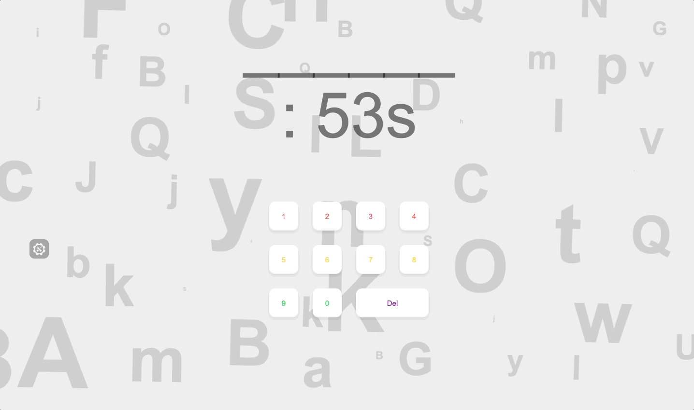
3. 帮助按钮, 分步骤展示页面详细功能
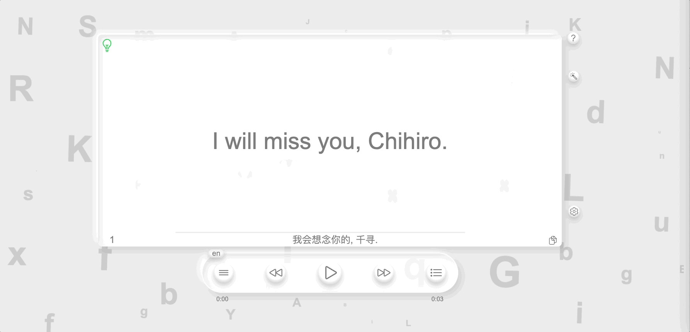
4. 语法分析展示按钮, 默认不显示分析结果, 点击后展示详细分析结果, 再次点击关闭显示
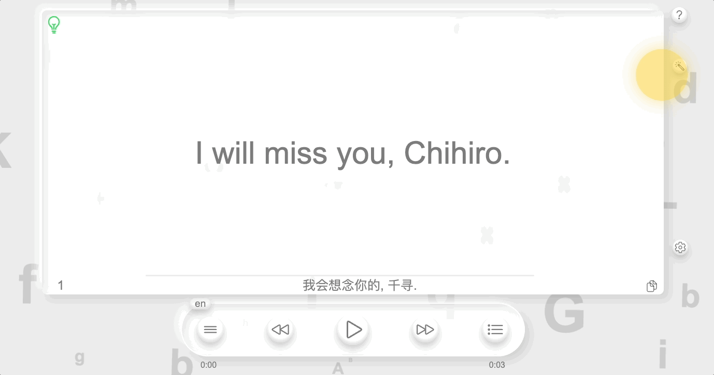
5. 账号信息, 退出账号功能
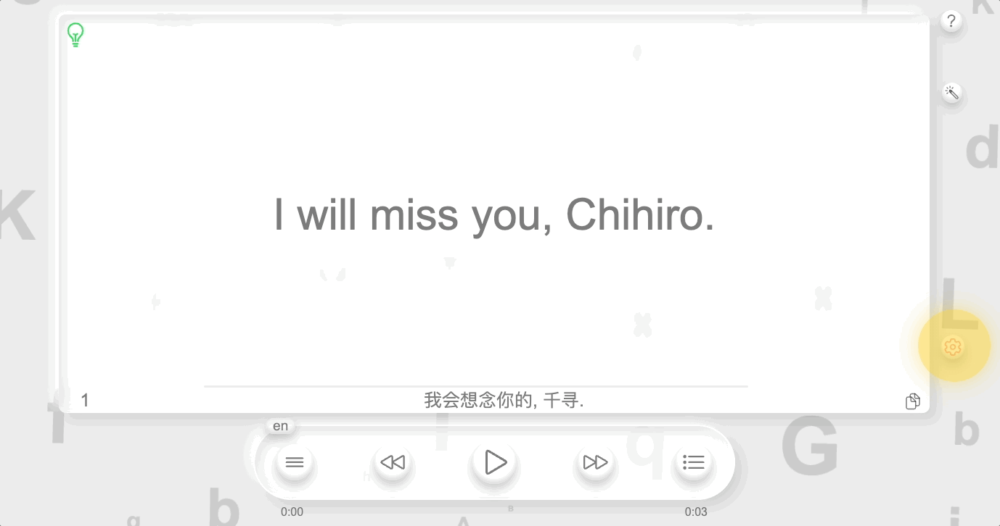
6. 音频语言切换, en 英文, zh 中文, en_zh 先英文后中文
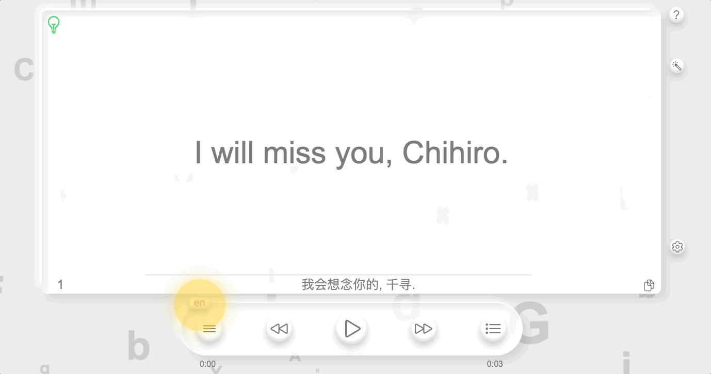
7. 播放模式, 四种模式: 单句播放一次, 单句循环, 列表播放一次, 列表循环
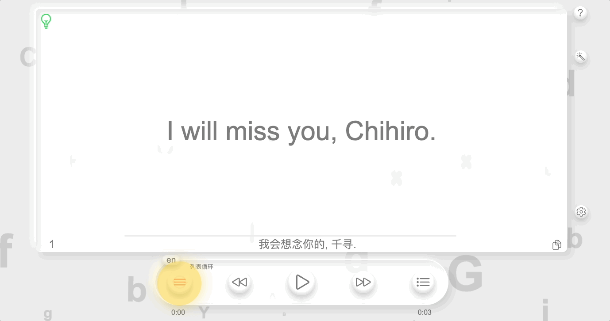
8. 播放上一句
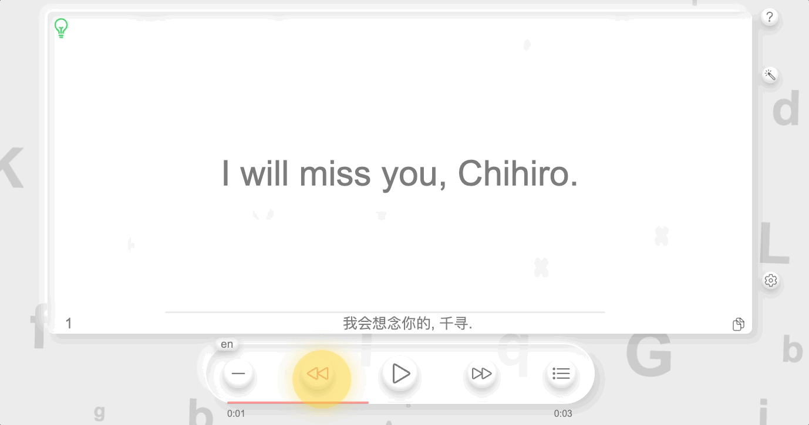
9. 播放暂停按钮
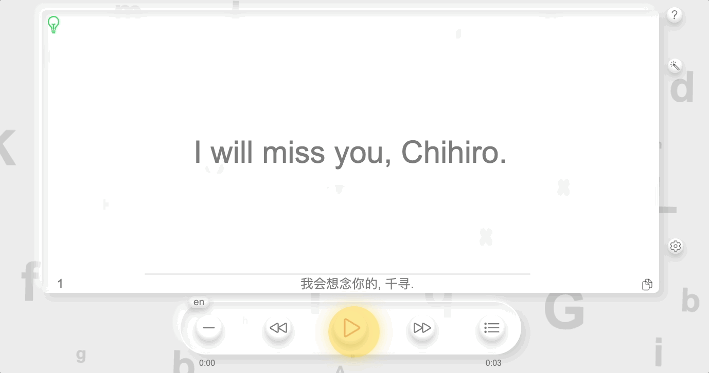
10. 播放下一句
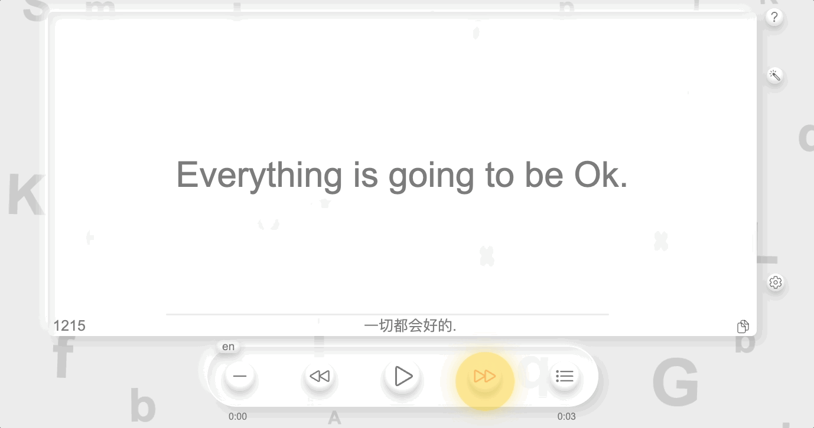
11. 播放列表按钮
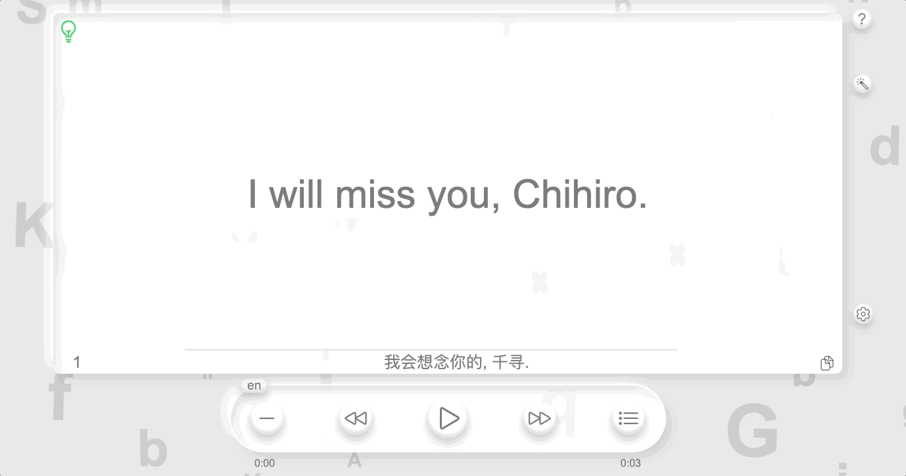
12. 顶部数字 对应语句序号, 标记百位数字定位, 点击直接跳到对应序号

13. 句子序号
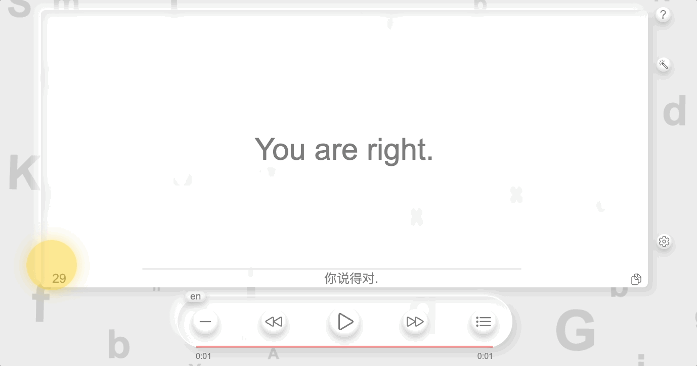
14. 英文句子复制按钮, 点击进行复制, 复制成功显示3秒 OK
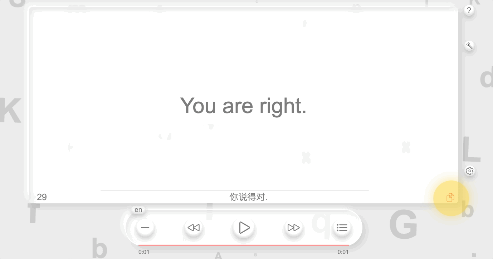
15. 语法先通过软件自动分析, 再通过人工确认, 人工确认后会标记绿色灯
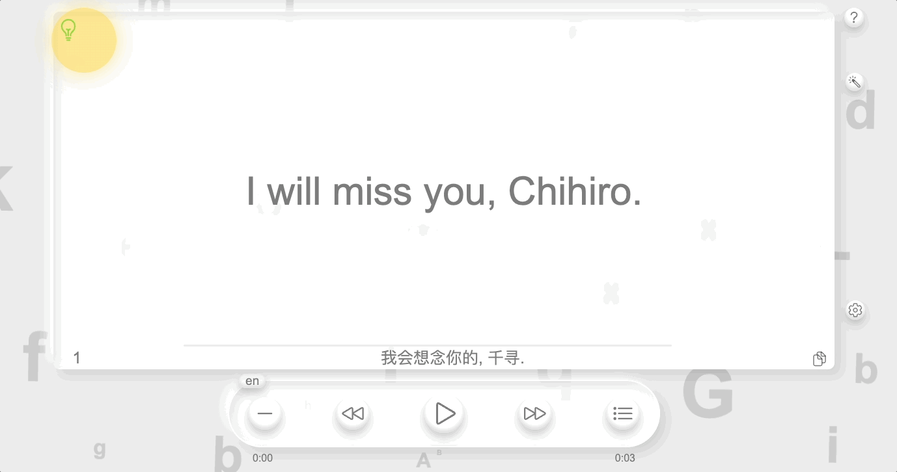
16. 常规展示页面, 中部英语句子, 底部对应句子中文翻译
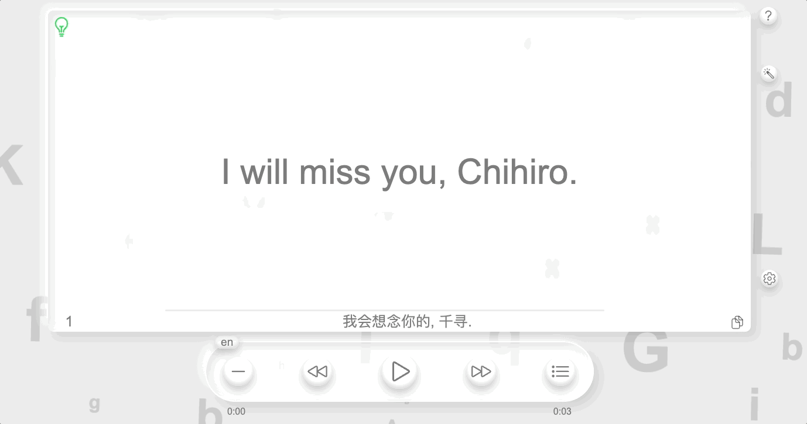
17. 激活语法分析按钮(右侧第二个按钮)后显示详细分析结果, 上部显示句子4项分析: 种类,结构,句型,时态, 中部显示语法块以及对应红色成分绿色词性, 单击语法块显示对应的黄色说明信息
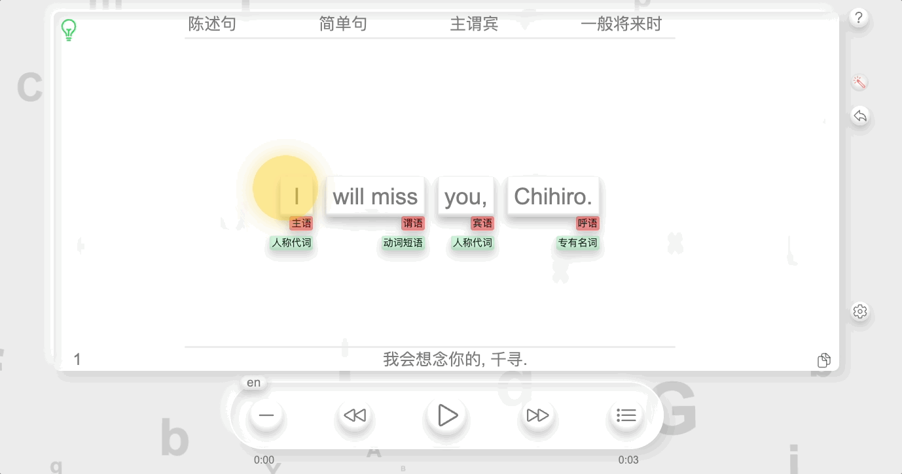
18. 双击多单词语法块则进入进一步分析展示
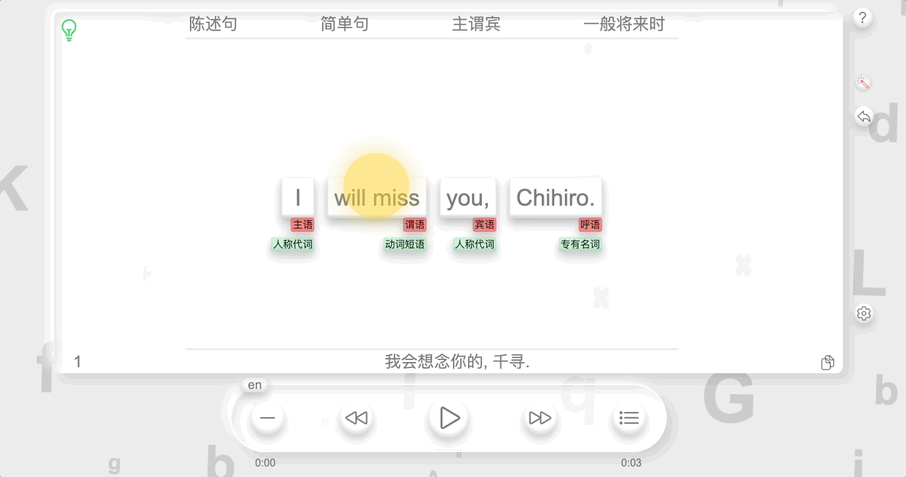
19. 双击单词语法块, 则进入单词展示: 包含英式美式音标(点击可朗读), 翻译(内容过长可拖动滚动条)
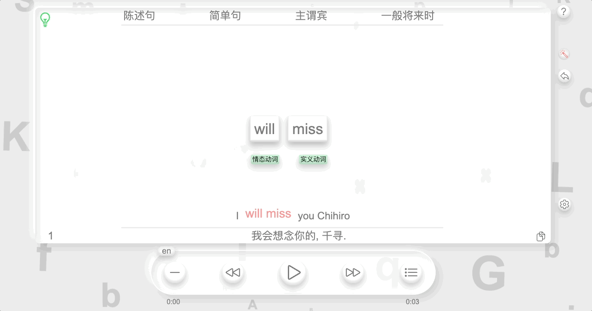